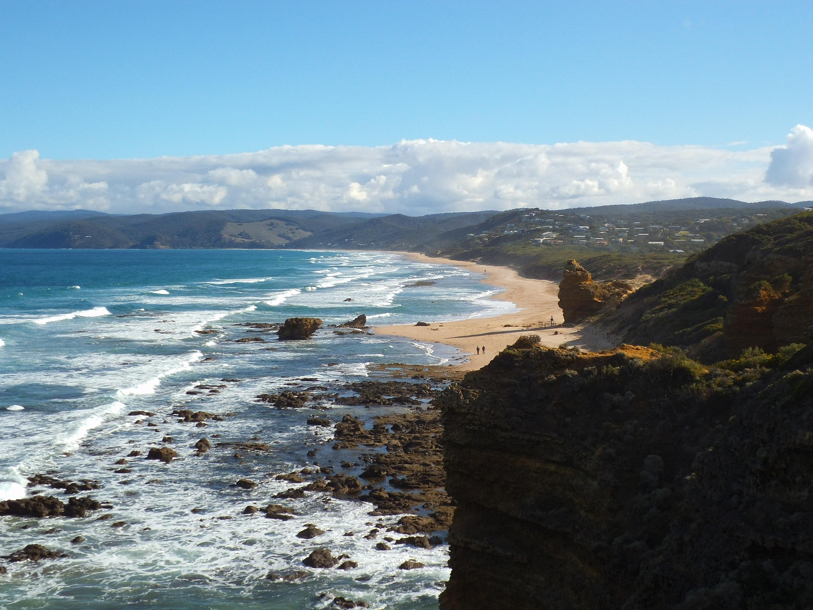

Οι ωκεανοί καλύπτουν το 71% της Γης και αποτελούν πηγή ζωής για αμέτρητα είδη. Είναι απαραίτητοι για το κλίμα, καθώς ρυθμίζουν τη θερμοκρασία και παράγουν οξυγόνο. Ωστόσο, η ρύπανση και η υπεραλίευση απειλούν τη θαλάσσια ζωή. Η προστασία τους είναι κρίσιμη για τη διατήρηση της βιοποικιλότητας και της ισορροπίας του πλανήτη. Χρειάζονται δράσεις για τη μείωση των αποβλήτων και τη βιώσιμη εκμετάλλευση των πόρων τους.

Ωκεανός αποκαλείται η πολύ μεγάλη θαλάσσια επιφάνεια. Ο όρος καθιερώθηκε, ιστορικά, από τον αρχαίο Έλληνα Ηρόδοτο και προέρχεται από τον ομώνυμο μυθικό θεό της Ελληνικής Μυθολογίας, τον Ωκεανό. Οι ωκεανοί αρχικά ήταν τρεις, ο Ειρηνικός, ο Ατλαντικός και ο Ινδικός, ενώ στη συνέχεια προστέθηκαν οι δύο των πόλων της Γης, ο Αρκτικός και ο Ανταρκτικός Ωκεανός, που συνολικά καλύπτουν σχεδόν τα τρία τέταρτα (71%) της επιφάνειας της γης, περιέχουν δε το 97% του νερού και το 90% των ηφαιστείων, ενώ σχεδόν τα μισά από τα παγκόσμια θαλάσσια ύδατα παρουσιάζουν βάθος μεγαλύτερο των 3.000 μέτρων.